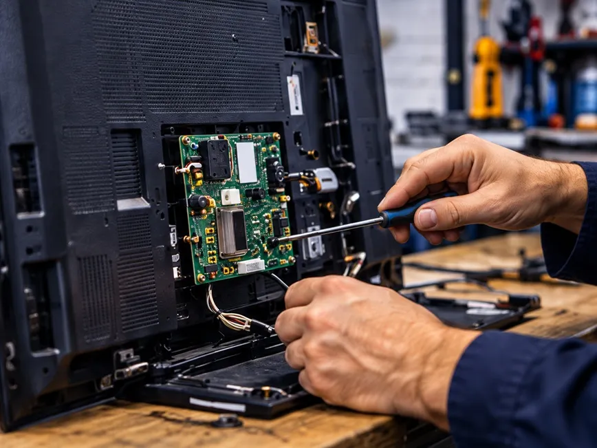

Tu televisor todavía puede ser útil
Una falla no significa que todo este perdido. Algunas piezas pueden ayudar a reparar otros equipos.

Reutilizar Piezas
Aprovechar componentes que aún funcionan evita desperdicio.

Recuperar materiales
Separar lo que pueda recuperarse para su reutilización.

Reducir residuos
Evitar que terminen en basura común contaminando.
¿Cómo puedes donar?
01
Escríbenos
Mándanos fotos, marca, modelo y una descripción de la falla.
02
Evaluamos
Te confirmamos si podemos recibir el equipo.
03
Coordinamos
Acordamos por WhatsApp los detalles de la recolección.

¿Qué equipos puedes consultar?
Esta iniciativa busca promover la responsabilidad ambiental en el manejo de equipos electrónicos. Estamos enfocados en todo los modelos y tamaño de televisores led.
Un televisor que dejó de funcionar no siempre está completamente perdido. Aunque tenga la pantalla rota, no encienda o presente falla, puede conservar piezas útiles para reparar otros equipos.
Antes de tirarlo, vale la pena aprovechar lo que todavía sirve.
Los televisores contienen plásticos, metales, vidrio y componentes electrónicos que necesitan una gestión diferente a la basura del hogar. Desecharlos de forma inadecuada desperdicia materiales y puede generar contaminación.
Reutilizar sus piezas ayuda a prolongar la vida de otros televisores y reduce la necesidad de fabricar repuestos nuevos. Reciclar los materiales recuperables también permite aprovechar recursos y disminuir los residuos.
Antes de desecharlo, contáctanos
En
Preguntas frecuentes
No, no es necesario que funcione. Podemos evaluar televisores LED que no encienden, tienen fallas de imagen o sonido, o la pantalla dañada. Aunque estén averiados, pueden conservar piezas útiles para reparar otros equipos. Mándanos fotos y cuéntanos qué le pasa para confirmar si podemos recibirlo.
Primero evaluamos el estado del televisor para identificar qué componentes todavía pueden aprovecharse. Las piezas que funcionan pueden utilizarse en la reparación de otros equipos, mientras que los materiales recuperables se separan para su reciclaje. Así evitamos que el televisor termine en la basura común y le damos una segunda oportunidad a todo lo que aún puede ser útil.
Podés acercar el televisor directamente a nuestro taller o, si no tenés cómo trasladarlo, podemos coordinar para recogerlo en tu domicilio. Antes de llevarlo o solicitar la recolección, escribinos por WhatsApp y envianos algunas fotos junto con la marca, el modelo y una breve descripción de su estado. Una vez evaluado, confirmaremos si podemos recibirlo y coordinaremos con vos el día, el horario y la forma de entrega o retiro.
Al donar tu televisor LED, contribuís a reducir los residuos electrónicos, recuperar materiales y reutilizar piezas que todavía pueden servir para reparar otros equipos. De esta manera, ayudás a cuidar el medioambiente y a aprovechar mejor los recursos existentes. Además, como agradecimiento por tu aporte, podrás acceder a interesantes descuentos en futuras reparaciones o servicios que necesites en MultiService. Los beneficios se asignarán según el equipo donado y el trabajo solicitado.
Antes de desecharlo,
Tu TV en desuso puede ayudar a reparar otra.